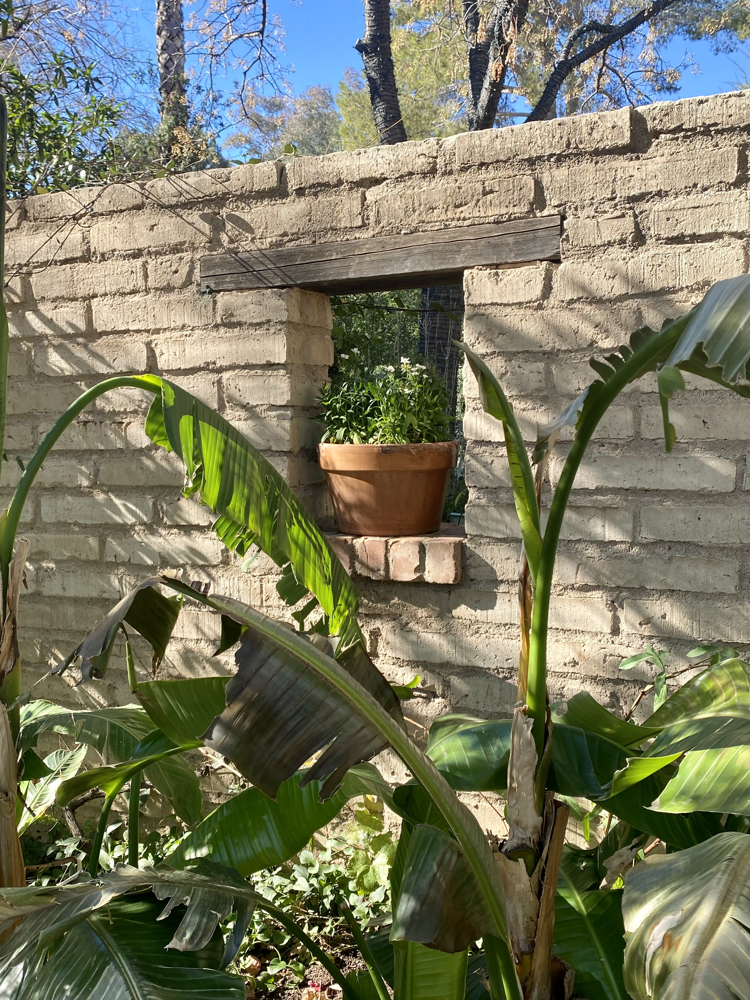
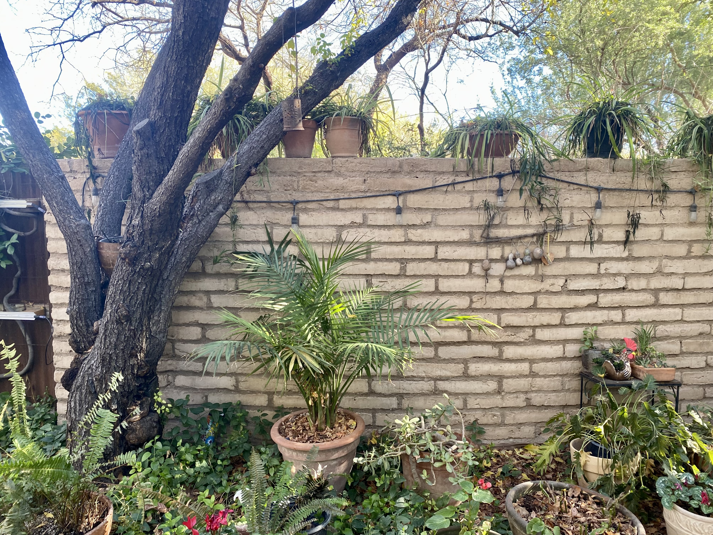
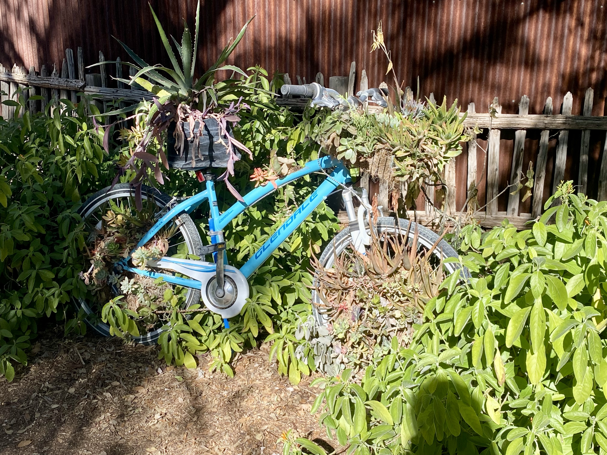
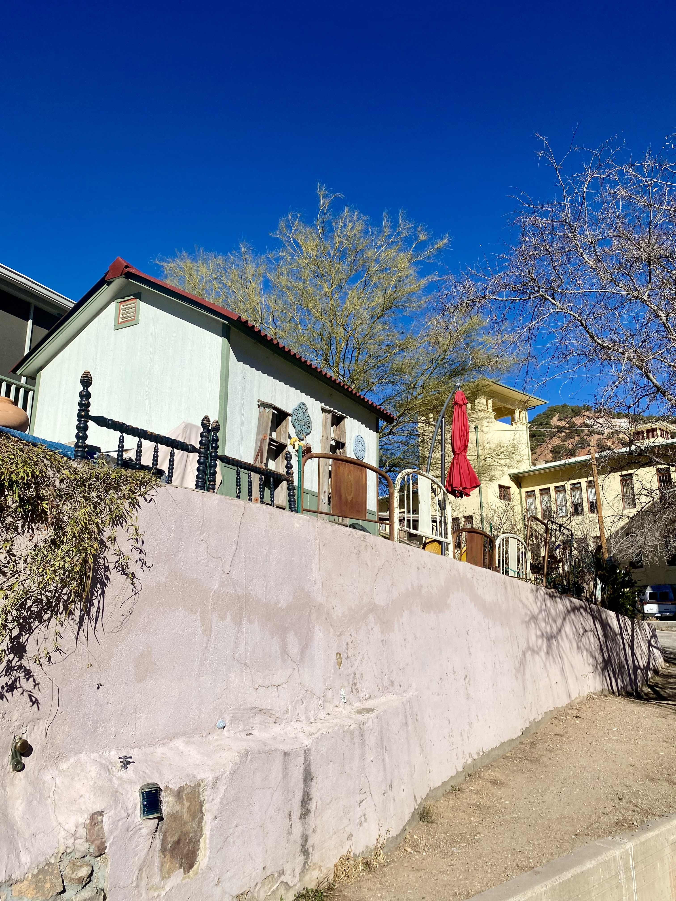

1 / 72
2 / 72

3 / 72
4 / 72

5 / 72
6 / 72

7 / 72

8 / 72

9 / 72
10 / 72

11 / 72

12 / 72

13 / 72

14 / 72
15 / 72

16 / 72

17 / 72
18 / 72

19 / 72

20 / 72
21 / 72

22 / 72
23 / 72

24 / 72
25 / 72

26 / 72

27 / 72
28 / 72
29 / 72

30 / 72

31 / 72

32 / 72
33 / 72

34 / 72

35 / 72
36 / 72

37 / 72

38 / 72

39 / 72
40 / 72

41 / 72
42 / 72
43 / 72

44 / 72

45 / 72

46 / 72

47 / 72
48 / 72

49 / 72
50 / 72

51 / 72

52 / 72
53 / 72
54 / 72
55 / 72
56 / 72
57 / 72

58 / 72

59 / 72

60 / 72

61 / 72

62 / 72

63 / 72
64 / 72

65 / 72
66 / 72

67 / 72
68 / 72

69 / 72
70 / 72

71 / 72
72 / 72
